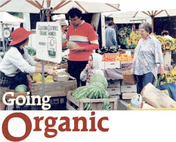
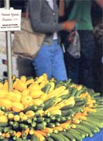
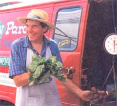
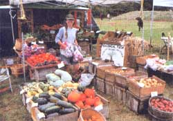
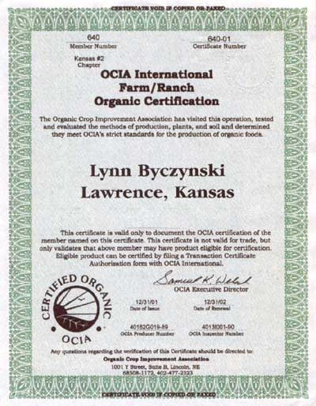
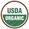
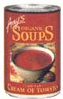
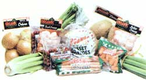
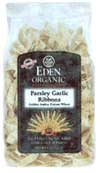
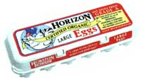

A lot has changed since then. The nonfanning public is now well acquainted with the concept of organic: According to a recent study, 63 percent of Americans buy organic foods and beverages at least some of the time. Eight out of every 10 adults realize organic products must be grown without the use of synthetic pesticides, fertilizers or added hormones. Sales of organic products increased by more than 20 percent every year during the 1990s, passing $9 billion last year. Organic has achieved star status.
So when beginning farmers ask our advice about how to succeed in market gardening, we always say, "Go organic." New growers need every advantage they can get, and the organic label provides higher prices for food and a marketing edge that can mean the difference between selling produce and composting it. For us, organic certification has opened the doors to the finest restaurants in town and to the local natural food stores. Our "organic" banner at farmer's markets set us apart from other growers and eventually created a following of loyal customers, which in turn allowed us to start a community supported agriculture (CSA) program, now in its ninth year.
But even more important is the fact that organic production is safe for people and the environment. Like most market gardeners, we live where we farm: We want our home to be a place of beauty and wellness. We don't want to have to keep our kids and pets indoors during the re-entry interval - the safety time required after pesticide use. We don't want to contaminate our ponds and groundwater with synthetic fertilizers. Our goal has always been to grow wholesome food in a system that respects our natural environment, and organic farming has been the way to do that.
THAT WAS THEN, THIS IS NOW
Although organic certification has been good to us in the past, the entire organic farming business is in the midst of sweeping change, and the future isn't entirely clear. Beginning in October, organic no longer will be just a system of beliefs and practices, but instead will be a federally regulated food label. The Organic Food Production Act, passed by Congress in 1990, will finally take effect, and it will become a federal offense to sell food as organic if it doesn't meet the federal organic standards.
Most organic farmers must be certified by an agency that has been accredited by the U.S. Department of Agriculture (USDA). Certification is a big expense for organic farmers: We expect to pay more than $600 this year for our four acres of organic vegetables and flowers. Once the farm has been certified, its products can be labeled with the new USDA Organic label.
Smaller growers-those who sell less than $5,000 a year in organic products don't have to be certified to call their food organic (although they can't use the USDA label without being certified). They do, however, have to comply with the same rules as certified growers. Cheating carries penalties for those who get caught, up to $10,000 per violation.
LABELING CHOICES
The involvement of the federal government in organic farming has created a backlash among some growers who think the new requirements are designed to industrialize an agricultural system that historically was a grassroots, idealistic movement. As a result, many growers are giving up their certification and calling their produce by some other name. Winter-gardening expert Eliot Coleman proposes "Authentic" as an alternative to "Organic" (See "Finding Truly Good Food." December/January 2002) a British group suggests "Wholesome;" Jan Dawson and Andy Reinhart, Ohio market gardeners, came up with the name "Ecological."
Growers who don't want to get certified can still benefit from the new organic standards. Everyone, even backyard gardeners, can turn to the federal rules for guidance about growing food in a way that respects the Earth. The USDA standards were written by people with a deep understanding of ecological food production, and although some details are disputed, they still provide a sound blueprint for growing healthy food.
The regulations are very detailed. I encourage interested growers to read them on the USDA's Web site, www.ams.usda.gov. Click on the "National Organic Program" to Find summaries and the full text of the regulations. Another valuable tool for organic growers is a list of brand-name materials that have been approved for organic production by the Organic Materials Review Institute (OMRI), an independent organization under contract to the USDA to evaluate whether products meet the organic standards. Visit OMRI's Web site at www.omri.org .
HOW TO GET CERTIFIED
If you decide you want to get your farm certified organic, your first step is to find a certification agency. Because the USDA has to accredit the certification agencies, you should first go to the USDA's Web site to find out which agencies operate in your state. Then, if you know of other organic growers in your area, you should get together to choose an agency. A big chunk of the cost of certification is the inspection fee, so working with others near you is important. If an agency has to send an inspector to visit just one farm, it's going to cost more than it would if the inspector's travel costs are shared by several farms.
Inspection costs are just one of the factors that make it difficult to predict how much my given farm will pay for certification. Some certification agencies charge a User fee, in which farms pay a percentage of their sales, so that larger farms pay more. Others charge a flat fee. Once You know which agencies will certify in your area, compare costs carefully: The differences can be significant.
Once you've chosen an agency, call or write for an application. There will probably be a fee, as the initial information packet you'll receive is voluminous. It contains the all-important "Organic Farm Plan Questionnaire," about 20 pages filled with hundreds of questions about your farm practices. Once you've filled out this questionnaire, send it in with the application fee. The certifying agency reviews your application and decides whether you appear to be eligible for certification. if your application passes this first examination, the agency will schedule an inspection.
An inspector hired by the agency will visit you at your farm at an agreed-upon time and will review your records. The inspector will inspect your fields, greenhouses, barns, buffer zones and other facilities to determine whether every facet of your farm complies with the organic standards. The inspector will fill out a report and make a recommendation about whether your farm should be certified.
Back at the agency, a technical committee or specialist will review the application, your records and the inspector's report, and issue a final decision. If you get the thumbs up, an official certificate will be mailed to you and you can start using the USDA Organic label. If you're rejected, you have the right to appeal and plead your case.
Plenty of paperwork lines this path, but if you persist, you'll reap your reward in higher prices for your produce and a better income for Your Certified Organic operation.
Lynn Byczynski and her husband, Dan Magentas, grow four acres of vegetables and cut flowers near Lawrence, Kansas. She is the founder and editor of Growing for Market newsletter (see related link).
COURTESY U.S. DEPARTMENT OF AGRICULTURE; COURTESY AMY'S KITCHEN; COURTESY MELISSA'S
allowedand prohibited
Organic farming is not intended to simply substitute natural materials for synthetic ones. It's more complicated than that. The goal of an organic system is to improve the soil and to work within nature's boundaries to grow healthy food. The conventional grower who wants to farm organically has to undergo an attitude shift from quick-fix solution to long-term prevention. For example, insect pest problems aren't cured with a so-called magic bullet like chemical pesticides, but are avoided by nurturing a healthy soil, which supports strong plants that don't attract pests.
Although inputs are only a small part of organic farming, growers need to know what materials are allowed and prohibited under the USDA's organic standards. In general, natural materials are allowed and synthetic materials are not, but there are many exceptions to both categories. For example, tobacco dust (nicotine sulfate) is natural, but it's prohibited because it is a toxic, broad-spectrum pesticide. Bleach, or sodium hypochlorite, is a synthetic substance, but it's allowed for disinfecting tools, buckets, wash basins and irrigation systems. The National List of Allowed and Prohibited Substances, known as the National List for short, gives detailed information. Visit the Web site at www.ams.usda.gov .
Records
The provisions of the new federal law that have elicited the most groans from farmers have been those related to record keeping. Most farmers hate to spend their time writing things down, but the government insists on it. To be certified, a grower must have an organic system plan that describes the practices that will be performed to ensure the stewardship of the soil, lists of every substance that will be used as an input, where it will be used and how often, and anything else the certifying agency thinks necessary to make sure the farmer is in compliance with the law. The farmer also has to keep records, such as a daily journal of all purchases, practices, harvests and sales.
Land No prohibited substance can be used on land for three years preceding harvest of the first organic crop. Finding land that is immediately eligible for certification is not an easy task. Cropland is likely to have been treated with chemicals, and even pasture is often fertilized or sprayed with herbicides for thistles and other noxious weeds. Land may have to be put into a three-year transition, in which the grower keeps records about how it's managed in order to get it certified after the three years are up.
Organic land also has to have clearly defined boundaries and buffer zones that prevent contamination by prohibited substances.
Soil The farmer must work to improve or maintain the soil's health and minimize soil erosion from tillage and cultivation practices, by using crop rotations, cover crops and the use of approved soil amendments. Raw manure cannot be used within 120 days before harvest of a crop where the edible portion touches the soil (such as carrots) or within 90 days before harvest of a crop where the edible part doesn't touch the soil (such as tomatoes). Compost has to be made according to strict standards. This is one of the areas where experts disagree, and some changes are expected to be made to the final compost rules.
The farmer cannot burn crop residues. Sewage sludge is absolutely banned. CCA pressure-treated lumber-treated with arsenic and chromium-cannot be used where it will be in contact with the soil.
Seeds and plants Seeds must be organically grown unless the grower can show an organic equivalent variety was not commercially available. Organic transplants must be used for annual crops. Non-organic planting stock can be used for perennials, but the crop won't be considered organic until it's been grown in an organic system for a year.
Pests In an organic system, spraying with pesticides (even allowed biological pesticides) is considered a last resort. Organic farmers are supposed to try these methods first:
releasing predators or parasites that will naturally curtail the pest species;
developing habitat such as borders of flowers for naturally occurring enemies of pests;
using nonsynthetic controls such as lures, traps and repellents.
Weeds Herbicides are not allowed. Weeds should be controlled by mowing, cultivating, hand weeding or flame weeding. Natural mulches such as hay and straw are fine, but plastic mulch can only be used if it's removed from the field at the end of the growing season.
Diseases Disease should be controlled if possible with management practices such as variety selection and crop rotations. As a last resort, biological and botanical substances on the National List can be used.
Poultry and eggs
Organic poultry and poultry products must be under continuous organic management beginning the second day of life. The animals must be fed organically grown feed. No drugs, including hormones, can be used to promote growth and no plastic pellets can be fed for roughage. Feed containing urea or manure, and feed containing slaughter byproducts are all banned.
The animals must have access to the outdoors, shade, shelter, an exercise area, fresh air and direct sunlight, when the animal's age and the weather make it appropriate.
Milk Dairy animals must be raised in an organic system for a year before milk can be sold as organic. Organic feed, access to pasture, fresh air and sunlight are required. The same prohibitions governing poultry feed apply to livestock feed. The USDA also has strict rules about animal health care, describing what medications and vaccines can be used.
Conclusion The rules are quite complicated and may seem overwhelming at first, but any good gardeners who have tried to grow food with a respect for nature will probably find themselves well on their way to organic eligibility. Whether you choose to get certified will depend on many factors, such as whether your potential customers require it and whether you think it's worth the expense. We weigh these factors every year, and have always decided in favor of certification. In fact, we're filling out the application right now for next year's certification. But that's not to say at some point we won't give up our Organic label and become "Eco-Logical" or "Wholesome." Like most market gardeners, we're waiting to see what the federal organic program will yield.
|
 The scene at your local farmer's market probably won't change much because of new organic standards, but to label produce ""organic""? like the summer squash and zucchini above? sellers will have to meet strict standards. |
 Using organic as selling point has often meant a higher selling price for producers |
 The author's official organic certification. |
|
 The new certification rules apply to processed foods, like the products shown in this section. |
 |
 |
|
 |
 |
 |
|
 |
|
|